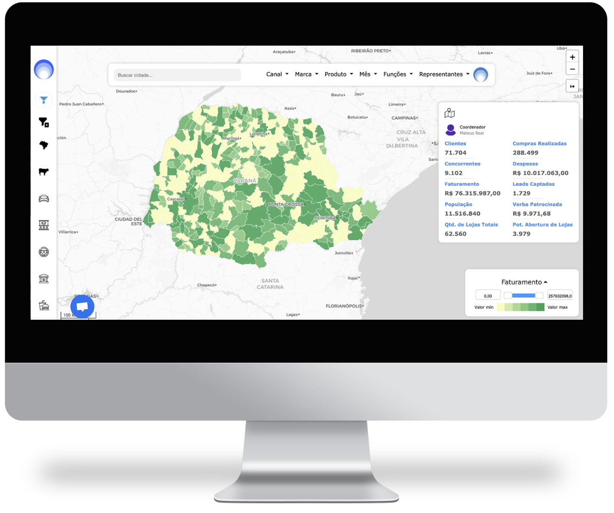
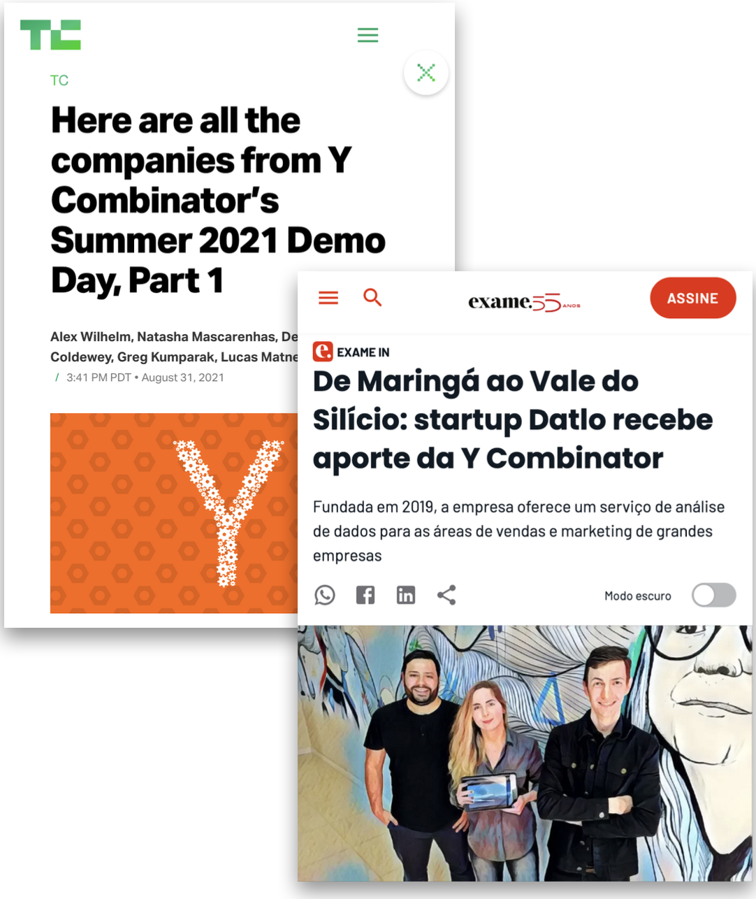

The first version of Datlo wasn't a product. It was a service — a small geomarketing consultancy in Maringá, in the interior of Paraná, helping companies decide where to put their next store. The work was good. The model didn't scale. Two of us looked at it and decided to bet that the same insight could be a tool — one anybody could pick up without our hands on the keyboard.
The bet
A consultancy turns into a product when you can take the smartest thing you do for the client and put it behind a button. For us, the smartest thing was matching geographic, behavioral, and competitive signals against a client's own sales data — and surfacing where to act next. So we built that, and called everything else a feature of it.

The screenshot above is the platform we shipped — a state map (here, Paraná, where we started) with revenue, customer count, lead capture, and store-opening potential rendered against geographic and competitive data. A field rep could open it on a Monday, see where their territory was leaking value, and act before lunch.
Three product principles
The three things we held onto, even when scope crept, even when investors wanted us to do something flashier:
Out-of-the-box ML + AI.
We used existing ML and AI models to optimize points-of-sale and logistics operations. Users could feed their own data and fine-tune our models without writing a single line of code.
Make it multiplayer.
We gave full flexibility for user provisioning and feature configuration to be defined by our clients. This allowed for broader adoption of the platform across the organization — sales, marketing, operations, all on one canvas.
Powerful integrations.
For power users, we made our API powerful, encrypted, and isolated, so that clients felt comfortable integrating sensitive sales and logistics data with our platform.
The clients we earned
The validation that mattered most wasn't a metric — it was whose logo appeared in our settings page. We developed integrations and cybersecurity measures for Fortune 500 clients, including:
Each one came with its own data shape, its own approval cycle, its own expectations of what "enterprise-grade" meant. The product had to bend without breaking — that's where the multiplayer principle and the API isolation paid for themselves.
The Y‑Combinator moment
Then, in the summer of 2021, we got into YC.
I led the presentations to investors and partners — including the Y Combinator partners themselves — and the moment we landed in the W21 batch was the moment Datlo stopped being a "Brazilian startup" and became something the press was willing to write about on both continents.

"De Maringá ao Vale do Silício."
TechCrunch — Y Combinator Summer 2021 Demo Day, Part 1.
Exame — startup Datlo recebe aporte da Y Combinator. A data-analytics service for sales and marketing teams at large companies.
From a small town in Paraná to the top batch of the most-watched accelerator in the world, in three years.
What it took to lead
By the end I was leading product, engineering, design, and data — twenty people across four disciplines. Recruiting was the work. Sequencing was the work. Saying no to things that looked like growth but weren't was the work.
What I took from it
Designing data-heavy systems without burying the user.
I learned how to build a data-heavy product where the dashboard isn't the answer — the answer is what the dashboard recommends you do next. That meant planning data pipelines for scale from day one, not retrofitting them once a Fortune 500 client showed up.
I learned to plan API-first — for products that compose, integrations stop being a feature and start being the substrate. And I learned to use data-usage telemetry as a crafting mechanism: if a feature isn't being touched by the second week, the feature isn't the problem; the surface around it is.
Most of all, I learned how to run continuous product development inside an enterprise sales cycle — shipping every week without breaking the contract every quarter.
Defend the customer's P&L, not the platform.
I'd research technical choices in more depth, earlier. Some of our day-one bets locked the roadmap longer than they should have, and the cost of changing them rose every month we waited.
I'd raise the focus on business outcomes sooner — less time defending the platform, more time defending the customer's P&L. The metric that would have changed everything was "did the rep open Datlo on Monday morning."
And I'd build the automatic alert system first, not last. Adoption follows habit — and habit follows the notification that arrives at the right moment, on the right channel, with the right thing to do next.
I left Datlo to start the next chapter — but the muscle of having shipped something that was real enough to be written about, used by Cargill, and admitted to YC is the muscle I still use every week.